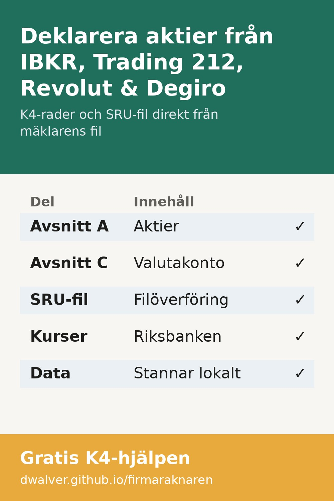

K4-hjälpen: deklarera aktier från utländska mäklare
Ladda upp filen från Interactive Brokers, Trading 212, Revolut eller Degiro. Du får färdiga rader till bilaga K4 i kronor, med genomsnittsmetoden, valutakonto i avsnitt C och en SRU-fil som du kan lämna direkt till Skatteverket.
Dina affärer stannar hos dig. Filerna läses och räknas i din egen webbläsare. Inget laddas upp till någon server.
1. Välj år och ladda upp filer
Ladda upp alla år sedan du började köpa, inte bara det år du deklarerar. Annars blir omkostnadsbeloppet fel. Du kan ladda upp flera filer, även från olika mäklare.
Egna justeringar: ingående innehav, splitar och affärer som saknas
Klistra in rader i formatet nedan (semikolon mellan fälten). Typ kan vara Köp, Sälj, Split (antal = nya aktier per gammal, t.ex. 10) eller Ingående (antal och totalt omkostnadsbelopp i SEK för aktier du köpte innan filerna börjar). Ladda ner mallen som fil.
2. Resultat för
Avsnitt A – marknadsnoterade aktier, fonder m.m.
Avsnitt C – valuta (valutakonto) och räntefonder
Pengar på ett konto i utländsk valuta räknas som en fordran. Vinst eller förlust uppstår först när omkostnadsbeloppet är förbrukat eller kontot har tömts, enligt Skatteverkets rättsliga vägledning.
Innehav och valutasaldon vid årets slut
Så hämtar du filen från din mäklare
Interactive Brokers (IBKR)
Logga in i Client Portal → Performance & Reports → Statements → Activity. Välj period Annual (ett år i taget, alla år sedan första köpet), format CSV och klicka Run. Ladda upp alla årsfiler samtidigt. Optioner och terminer hoppas över i den här versionen.
Trading 212
Öppna appen eller webben → History → ikonen för export → välj datumintervall (högst ett år per fil) och kryssa i Orders. Upprepa för varje år och ladda upp alla filer.
Revolut (aktier)
I appen: Invest → … → Documents → Brokerage account → Account statement → välj Excel/CSV och period från första köpet. Insättningar till aktiekontot räknas om med Riksbankens kurs, eftersom växlingen syns i ditt vanliga Revolut-konto och inte i filen.
Degiro
Logga in → Inkorg → Transaktioner → välj period från första köpet → Exportera → CSV. Med AutoFX i SEK används Degiros faktiska belopp i kronor.
Annan mäklare eller kryptobörs
Använd vår mall och fyll i dina affärer. Kryptovalutor redovisas i avsnitt D och stöds inte här.
Så räknar K4-hjälpen
- Genomsnittsmetoden: omkostnadsbeloppet per aktie är det totala inköpspriset inklusive courtage, delat med antalet aktier. Varje försäljning minskar det med snittet gånger antalet sålda.
- Valutakurs: har mäklaren växlat till kronor används det faktiska beloppet i kronor. Annars Riksbankens publicerade kurs för dagen, eller senast publicerade kurs före (helger).
- Valutakonto (avsnitt C): insättningar, försäljningar och utdelningar ökar kontots omkostnadsbelopp. Köp, avgifter och uttag minskar det med sitt värde i kronor. Vinst redovisas när omkostnadsbeloppet tar slut, och vinst eller förlust när kontot töms.
- Avrundning: belopp avrundas till hela kronor. Antal aktier anges i hela tal på K4, så bråkdelar avrundas (minst 1).
Källor: Skatteverkets sida om utländsk valuta och rättsliga vägledning om kapitalvinstberäkning. Fältkoderna följer Skatteverkets tekniska beskrivning för K4 2026P4.
Guider: Deklarera aktier från en utländsk mäklare steg för steg · Valutakonto i deklarationen
